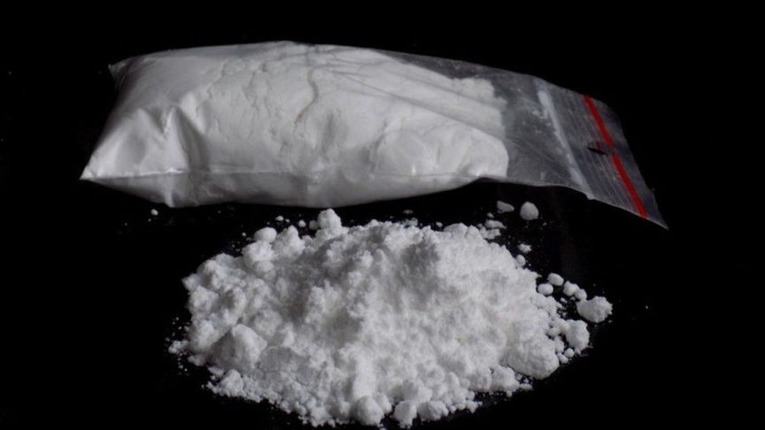
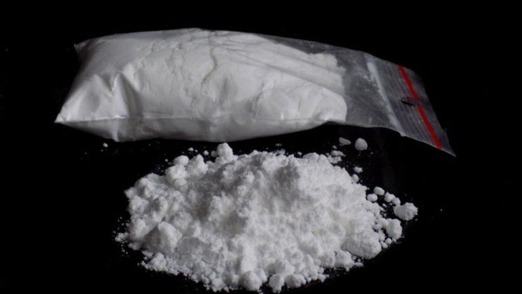

UK Man Imprisoned for Importing Cocaine
A UK man was sentenced to over two years in prison after he pleaded guilty to importing cocaine purchased through the dark web.

The sentencing of 47-year-old Wayne Withers resulted from information provided to the North West Regional Organised Crime Unit by the FBI in early 2021. The information was acquired following the seizure of AlphaBay in 2017 and showed that Withers had purchased four grams of cocaine from a Brazilian vendor on the now-defunct marketplace.
The prosecution told the court that the data provided by the FBI showed that in May 2017, under the username "Seasiders", Withers contacted a vendor going by the moniker "Machismo" and asked for the price of a kilo cocaine. After being told it went for $22,000, he decided to place a test order of 4 grams.
On May 25, he contacted the vendor and confirmed he had received the coke. He told the vendor that he could move 10 kgs and that he would order a kilo in a week and increase the order amount gradually if all went well.
He ordered a kilo from the vendor on June 5. On June 20, the vendor contacted him to tell him that the drug package had been intercepted and promised to send a new one packaged as a gift. On June 30, the vendor disclosed that the package had also been intercepted and said he would try "a new stealth method" in the next shipment.
On July 2, he contacted the vendor and asked them to ship the drug package to the address of his tanning shop under a fictitious name. He also asked the vendor to provide him with a tracking number for the shipment. The market was shut down shortly after this exchange. The investigators could not establish whether Withers received the package.
The investigators executed a search warrant at Withers' residence on March 19, 2021. The search resulted in the seizure of two iPhones and three laptops. He had allegedly installed the TOR browser on the laptops.
His defense attorney told the court that he was only able to import 4 grams of coke. He also disclosed that Withers was a coke user at the time of the importation but has been clean for over a year.
The presiding judge sentenced Withers to two years and eight months in prison.

The sentencing of 47-year-old Wayne Withers resulted from information provided to the North West Regional Organised Crime Unit by the FBI in early 2021. The information was acquired following the seizure of AlphaBay in 2017 and showed that Withers had purchased four grams of cocaine from a Brazilian vendor on the now-defunct marketplace.
The prosecution told the court that the data provided by the FBI showed that in May 2017, under the username "Seasiders", Withers contacted a vendor going by the moniker "Machismo" and asked for the price of a kilo cocaine. After being told it went for $22,000, he decided to place a test order of 4 grams.
On May 25, he contacted the vendor and confirmed he had received the coke. He told the vendor that he could move 10 kgs and that he would order a kilo in a week and increase the order amount gradually if all went well.
He ordered a kilo from the vendor on June 5. On June 20, the vendor contacted him to tell him that the drug package had been intercepted and promised to send a new one packaged as a gift. On June 30, the vendor disclosed that the package had also been intercepted and said he would try "a new stealth method" in the next shipment.
On July 2, he contacted the vendor and asked them to ship the drug package to the address of his tanning shop under a fictitious name. He also asked the vendor to provide him with a tracking number for the shipment. The market was shut down shortly after this exchange. The investigators could not establish whether Withers received the package.
The investigators executed a search warrant at Withers' residence on March 19, 2021. The search resulted in the seizure of two iPhones and three laptops. He had allegedly installed the TOR browser on the laptops.
His defense attorney told the court that he was only able to import 4 grams of coke. He also disclosed that Withers was a coke user at the time of the importation but has been clean for over a year.
The presiding judge sentenced Withers to two years and eight months in prison.